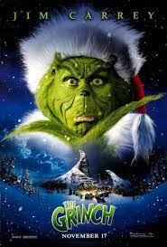
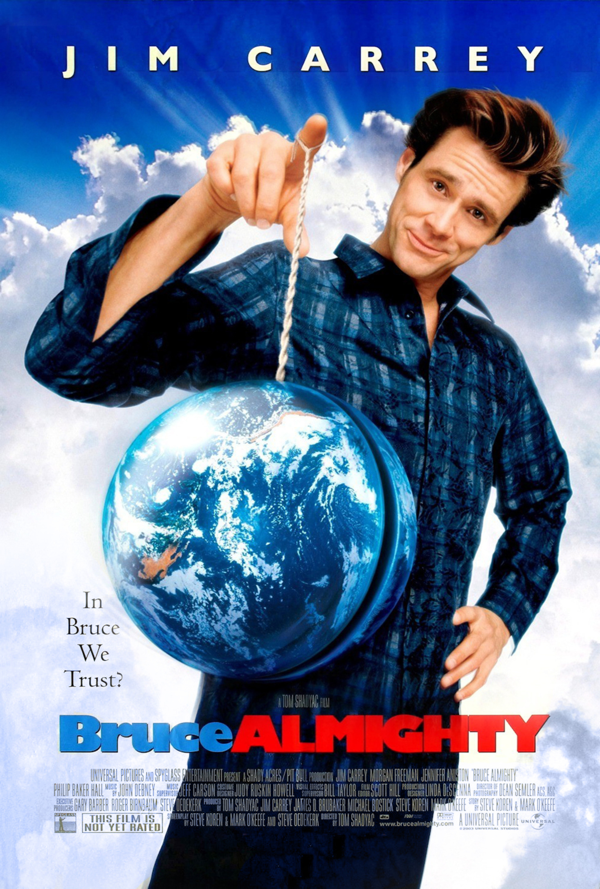

Actor

Jim Carrey
Biografía
James Eugene Carrey (Newmarket, Ontario; 17 de enero de 1962) es un actor y comediante canadiense-estadounidense. Es conocido por sus interpretaciones cómicas slapstick . Por su trabajo ganó dos premios Globo de Oro y fue candidato a un premio BAFTA.Carrey nació en Newmarket, Ontario, hijo de Kathleen (de soltera Oram), una ama de casa, y de Percy Carrey, contable de profesión y músico aficionado. Tiene tres hermanos mayores, John, Patricia y Rita. Su familia es católica de ascendencia francesa, irlandesa y escocesa por parte materna,y francocanadiense (el apellido original era Carré) por parte paterna.
Filmografia
- (1994) Ace Ventura(Trailer)
- (1994) Dumb & Dumber(Trailer)
- (1994) The Mask(Trailer)
- (1998) The Truman show(Trailer)
- (2000) The Grinch(Trailer) 
- (2003) Bruce Almighty(Trailer) 
- (2004) Lemony Snicket(Trailer)
- (2004) Eternal Sunshine of the Spotless Mind(Trailer)
- (2007) The Number 23(Trailer)
- (2016) Dark crimes(Trailer)


Familia
Cónyuges
- Melissa Womer (matr. 1987; div. 1995)
- Lauren Holly (matr. 1996; div. 1997)
Hija
- Jane Erin Carrey (1987)
Premios
Globo de oro
- (1999) Mejor actor drama "The Truman show"
- (2000) Mejor actor comedia "Man on the moon"